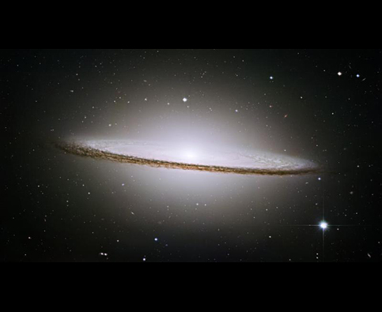
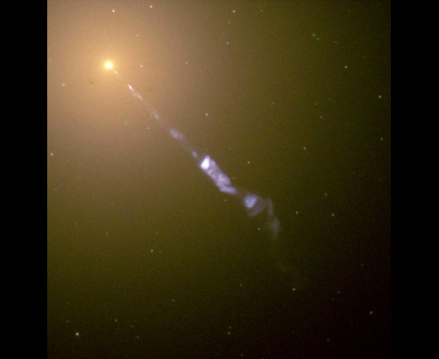
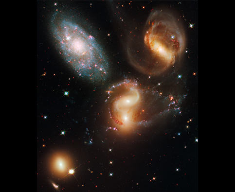
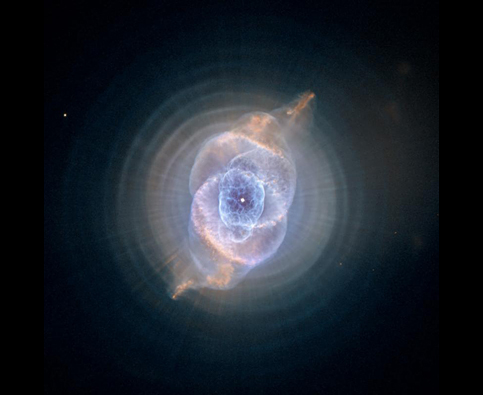

Телескоп Хаббл
Телескоп Хаббл, запущенный на орбиту в 1990 г., произвел настоящую революцию в астрономии и вдохновил поколения захватывающими видами Вселенной. Чтобы отпраздновать 20-й день рождения Хаббла, мы вместе с нашими друзьями из института исследований космоса с помощью космического телескопа (STScI) решили опубликовать 20 наших любимых фотографий. Рассмотрите представленные ниже изображения, узнайте много нового из этого видеотура или загрузите наш новый видеотур Хаббла в Google Планета Земля, чтобы перенестись прямо к этим красотам!
- Газовые столбы в туманности Киля
- Шаровидное звёздное скопление М 80
- Звёздное скопление NGC 602
- Газовые столбы в туманности Орел
- Туманность Ориона
- Туманность Бабочка NGC 6302
- Звезда Эта Киля
- Крабовидная туманность
- Спиральная галактика М 51
- Галактика Сомбреро
- Сердце галактики М87
- Взаимодействующие галактики "Мыши"
- Группа галактик Квинтет Стефана
- Скопление галактик Эйбл 2218
- Область глубокого обзора телескопа Хаббла
- Кольцевая туманность
- Туманность Кошачий глаз
- Переменная звезда V838 Единорога
- Туманность Киля
- Спиральная галактика с перемычкой NGC 1300
- Отправить сообщение в Хаббл
Газовые столбы в туманности Киля
Изображение опубликовано к 20-летию Хаббла. В этом образовании из газа и пыли высотой в три световых года можно увидеть молодые звезды. Подробнее…

Шаровидное звёздное скопление М 80
Шаровидное звёздное скопление М80, являющееся самым плотным скоплением Млечного пути, состоит из сотен тысяч звезд, которые прочно притягиваются друг к другу силами гравитации. Подробнее…

Звёздное скопление NGC 602
Недавно родившиеся звезды выхватывают часть материи из центра области образования звезд Малого Магелланова Облака. Подробнее…

Газовые столбы в туманности Орел
Газовые столбы туманности Орел приняли свою форму из-за звездного ветра и радиации. Внутри столбов формируются звезды. Подробнее…

Туманность Ориона
Тысячи формирующихся звезд прячутся внутри вращающейся массы из газа и пыли. На данном снимке Туманности Ориона видно более трех тысяч звезд разного размера. Подробнее…

Туманность Бабочка NGC 6302
Газ, раскаленный до температуры свыше 36 000 градусов, распространяется в пространстве со скоростью более 600 000 километров в час, образуя туманность в форме бабочки. Подробнее…

Звезда Эта Киля
150 лет назад Эта Киля ненадолго стала одной из самых ярких звезд южного полушария. Виной тому вспышка, из-за которой из выброшенного вещества образовалась небольшая туманность. Подробнее…

Крабовидная туманность
Крабовидная туманность – это то, что осталось от настолько яркой вспышки сверхновой, что записи о ней сохранились с 1054 г. В центре туманности пульсирует нейтронная звезда. Подробнее…

Спиральная галактика М 51
Галактика М51, известная также под названием "галактика Водоворот", представляет собой длинные цепочки звезд и газа, соединенных пылью. Подробнее…

Галактика Сомбреро
Галактика Сомбреро состоит из 2000 звездных скоплений и скрывает в себе массивную черную дыру. Со стороны Земли она видна практически в профиль. Подробнее…

Сердце галактики М87
Потоки раскаленного газа из центра эллиптической галактики М87 указывают на существование массивной, в 2,6 миллиарда раз тяжелее Солнца, черной дыры. Подробнее…

Взаимодействующие галактики "Мыши"
Две сталкивающиеся галактики, известные как "Мыши", испускают потоки звезд и газа. Через 500 миллионов лет они образуют единую галактику. Подробнее…

Группа галактик Квинтет Стефана
Галактики из группы Квинтет Стефана замерли в космическом танце. Четыре из них захватывают друг друга гравитацией. Подробнее…

Скопление галактик Эйбл 2218
Масса скопления галактик Эйбл 2218 искажает и увеличивает силу света галактик, находящихся за ней, что позволяет нам заглянуть в самые отдаленные галактики Вселенной. Подробнее...

Область глубокого обзора телескопа Хаббла
На этом снимке видны почти 10 000 галактик, в том числе излучающие совсем мало света. Их история насчитывает миллиарды световых лет. Подробнее…

Кольцевая туманность
Хаббл запечатлел облако газа, которое испускается умирающей звездой. В центре Кольцевой туманности, расположенной примерно в 2000 световых годах от Земли, находится белый карлик. Подробнее…

Туманность Кошачий глаз
Это самая сложная из найденных планетарных туманностей: умирающую звезду туманности Кошачий глаз окружает одиннадцать концентрических слоев газа. Подробнее…

Переменная звезда V838 Единорога
Пыль и газ можно увидеть благодаря свету, испускаемому вспыхнувшей звездой. Подробнее…

Туманность Киля
Туманность Киля шириной в 50 световых лет представляет из себя настоящий вихрь рождения и смерти звезд. Подробнее…

Спиральная галактика с перемычкой NGC 1300
Окончания галактики NGC 1300 соединены между собой длинной перемычкой. Наша собственная галактика, Млечный путь, также является галактикой с перемычкой. Подробнее…

Отправить сообщение в Хаббл
Войдите в историю. Чтобы отпраздновать 20-летие Хаббла, вы можете отправить сообщение, которое будет сохранено в капсуле времени. Подробнее…